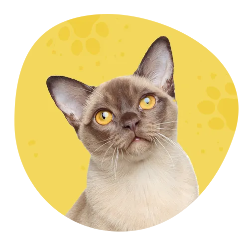
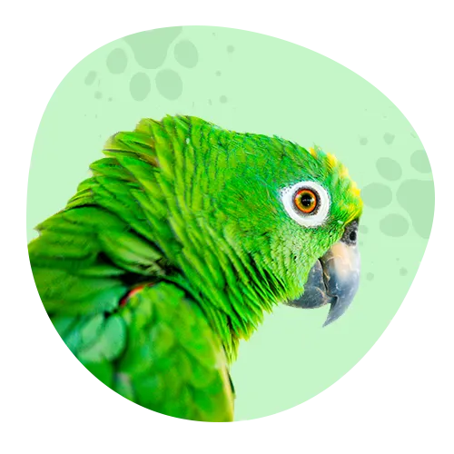

<div class="animal-carousel container-lg col-8 mx-auto d-flex flex-column">
    <div id="carouselExampleIndicatorss" class="carousel slide" data-ride="carousel">
        <ol class="carousel-indicators bg-info mt-5 col-2 mx-auto pr-0 animal-carousel__round">
            <li data-target="#carouselExampleIndicators bg-dark" data-slide-to="0" class="active"></li>
            <li data-target="#carouselExampleIndicators" data-slide-to="1"></li>
            <li data-target="#carouselExampleIndicators" data-slide-to="2"></li>
        </ol>
        <div class="carousel-inner animal-carousel-inner">
            <div class="carousel-item active card h-100">
                
                <div class="card-body">
                    <h4 class="card-title text-center">Casper </h4>
                    <p class="card-text carousel-any-p__subtitle fst-italic">"Jumping from a tree, i injured my paw. My
                        parents took me to the clinic
                        for an examination. The doctor looked at my paw, took an X-ray, and said
                        it wa just a bruise. He prescribed me a treatment, and after a week I
                        could fully step on my paw again"</p>
                    <p class="card-text carousel-any-p__subtitle bold text-center mb-5">7 years</p>
                </div>
            </div>
            <div class="carousel-item card h-100">
                
                <div class="card-body">
                    <h4 class="card-title text-center">Jackkie </h4>
                    <p class="card-text carousel-any-p__subtitle fst-italic">“Many thanks to the veterinarians of this
                        clinic for being so good, kind
                        and professional. My parents regularly bring me to see them. The doctors
                        of this clinic are very careful and do not cause any discomfort. Even
                        vaccinations do not hurt. ”</p>
                    <p class="card-text carousel-any-p__subtitle bold text-center mb-5">3 years</p>
                </div>
            </div>
            <div class="carousel-item card h-100">
                
                <div class="card-body">
                    <h4 class="card-title text-center">Dionis </h4>
                    <p class="card-text carousel-any-p__subtitle fst-italic"> “My owners love me very much. They
                        immediately noticed that I was sitting
                        on the perch all day and not eating anything. They took me to this clinic.
                        The doctor immediately discovered why I felt bad and prescribed treatment.
                        Now everything is fine with me.”</p>
                    <p class="card-text carousel-any-p__subtitle bold text-center mb-5">4 years</p>
                </div>
            </div>
        </div>
        <a class="carousel-control-prev" href="#carouselExampleIndicatorss" role="button" data-slide="prev">
            <span class="carousel-control-prev-icon bg-dark animal-carousel__round" aria-hidden="true"></span>
            <span class="sr-only">Previous</span>
        </a>
        <a class="carousel-control-next" href="#carouselExampleIndicatorss" role="button" data-slide="next">
            <span class="carousel-control-next-icon bg-dark animal-carousel__round" aria-hidden="true"></span>
            <span class="sr-only">Next</span>
        </a>
    </div>
</div>
